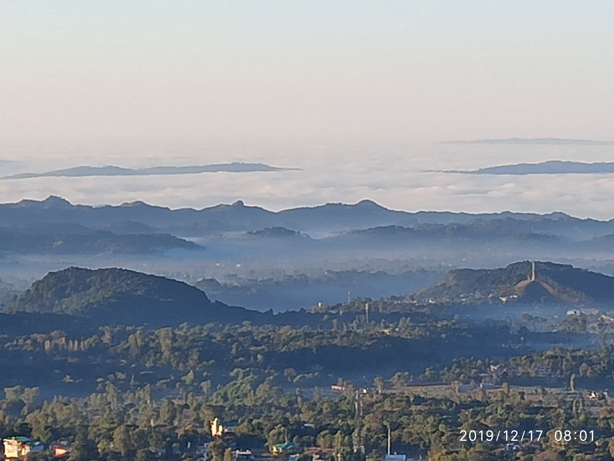

Updates 2019. Vision 2020. Volunteers needed.
Looking back upon 2019

News from the pilot village - Saalig, Dharamsala
Children from our Life Education and Excellence program have shown a remarkable change in their abilities and behavior. They like to ask questions, think, grasp the meaning behind words. They have an understanding on what really is the education that they need. They are letting go of their fears, challenging unverified assumptions and ensuring real knowledge within. They have been exposed to scientific method of inquiry into facts and reality. They havbe made films on personal, social and environmental awakening and solution (currently being screened offline. To be released online in 2020) They have activated higher realms of intelligence and awareness within themselves. They have made a significant understanding of basic fundamentals of existence, being human, relationships, society, environment, world. They have also developed a habit into reading. Overall we are happy with the progress in the four that have stayed in our program with full interest and support of their families.
Some adults from the village have also joined the incubation program for Swarajya in Saalig. They have started putting their mind, time and also money and resources. There are regular meetings for lecture, discussions and various activities for the pilot on ground, across all six dimensions of the working model. Their families are also getting acquainted gradually. On 22nd December, will be the first Village Meeting (Gram Sabha) for Undivided Society branch of village Saalig. All families have been invited to understand the program, apply for work if they want to start some work from home. The invitation includes an introduction to the issue at hand. It can be read here.
Our wollen work unit of women, which started last year, is getting more orders from Delhi and also locally. We will be providing such micro work opportunities to the families in this area, as part of the third dimension (production-service) of the program.
Vision for 2020 and volunteer program
- We will be aiming to have the village discussing, understanding and identifying the problems, needs of their families, society and humankind. The vision of a beautiful family, village and society over long term. And to start taking some steps in this direction with their families.
- Atleast 10 families will start their first year of Life Education & Excellence. They will also start to engage in the different dimension of the Universal Working Model for Swarajya. That these families will be able to demonstrate to themselves and the rest of the village - the guaranteed benefits of right understanding, right feeling and living in a universal order aligned with natural laws and hence most harmonious for all.
- We will be launching locally made, preferably natural products in woollen clothes, food and household segments. We will use recycled plastic or no plastic at all.
- We will be consuming the products within our village and also exchanging with outside, locally or online.
- The income from the proceeds will go the families but also accrue into the family group and village accounts. This income can be used as village’s internal bank/economy and will be used for further welfare of village families, village, society and environment.
- We will be starting day time Life Education and Excellence program for children. The children with their families need holistic education which is not being currently provided in schools and colleges of this area. We need volunteer facilitators for the same. They will be firstly expected to be themselves committed to ensuring knowledge within. And secondly facilitate the same process with children, in an open learning environment. We need a one year term for atleast one volunteer, and rest can be for short term.
- We need volunteers who can help us with production, local exchange, branding, marketing & sales in Dharamsala and surroundings, ecommerce - all parts of the dimensions third (production-services-skills) and fourth (exchange-econnomy) of the working model.
- We are also in talks for leasing land in the village for eco forestry, organic food production, theater with residency and life excellence camps. Most probably some will convert.
- We will also be launching a platform and portal for dispersing online content and courses for holistic human wellbeing and unviersally verifiable proposals on nature of Self and Existence. This will bbe open to the world at large and anyone can submit universal information there, to be accepted by curators. It will be used by students and teachers of Indian Technical universities starting from the launch, for its content on Universal Human Values. We see it as the Undivided Society’s use of internet and technology to disseminate universal, self verifiable information through a society owned platform. Other app developers will be able to access this platform and develop apps curated for specific educational purposes, domains and themes.
- Volunteers can apply to contribute in any way matching their interest, skills and our needs. Work can be long term or visit basis. If the volunteers need support for their living needs, it can be figured on case to case basis upon show of interest in the association.